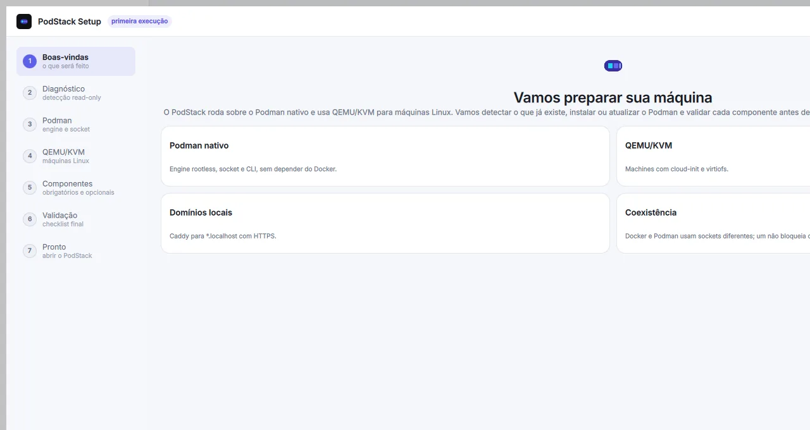
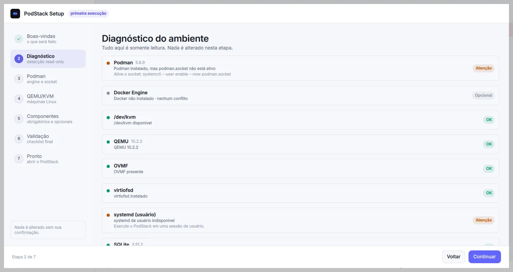
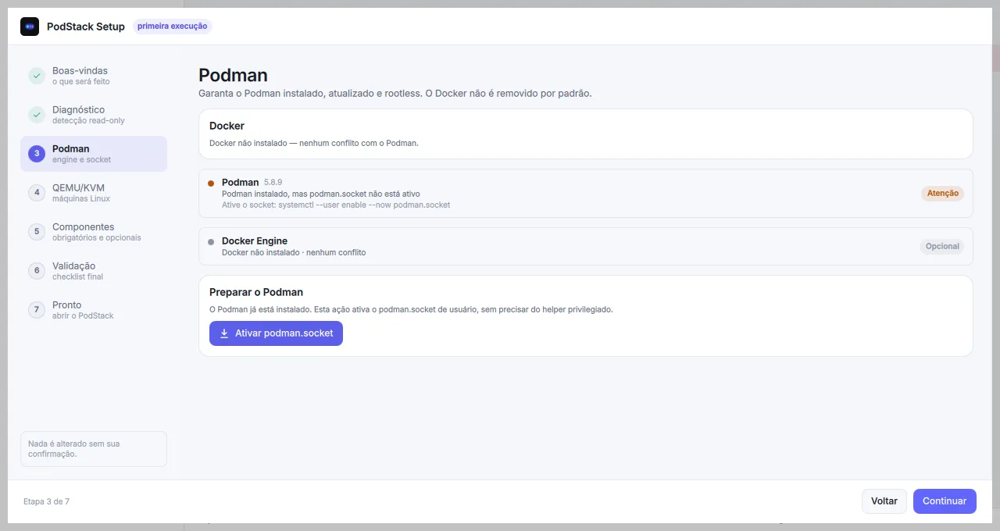
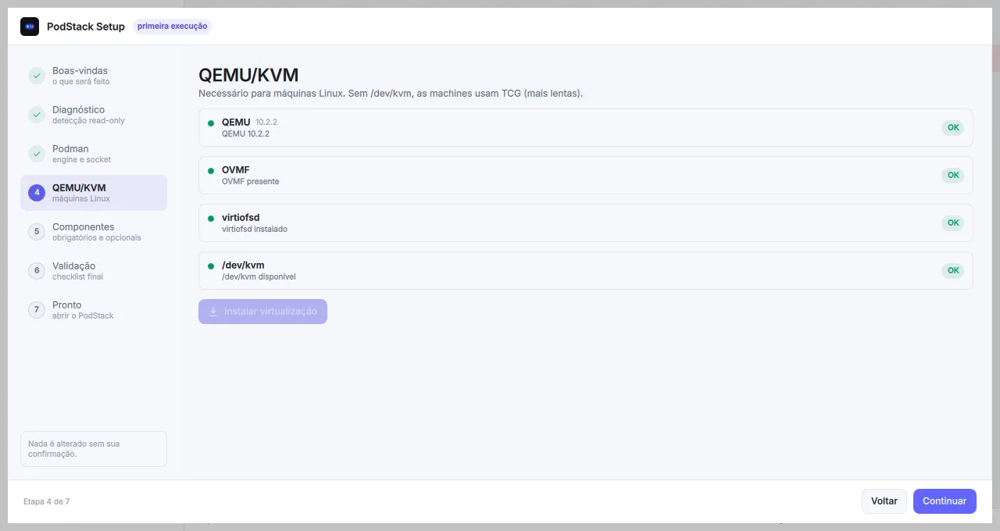
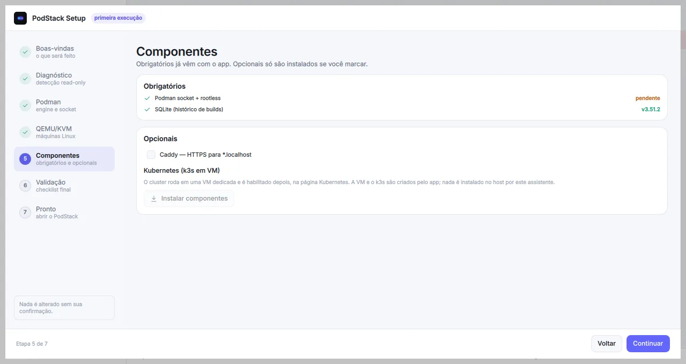
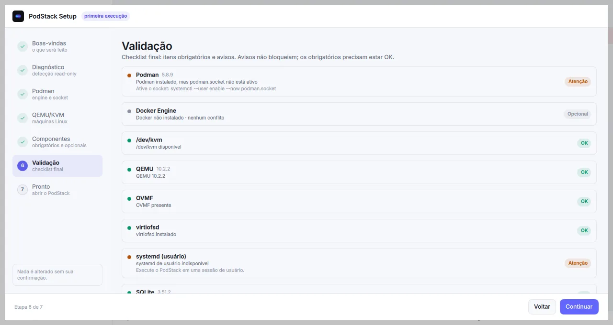
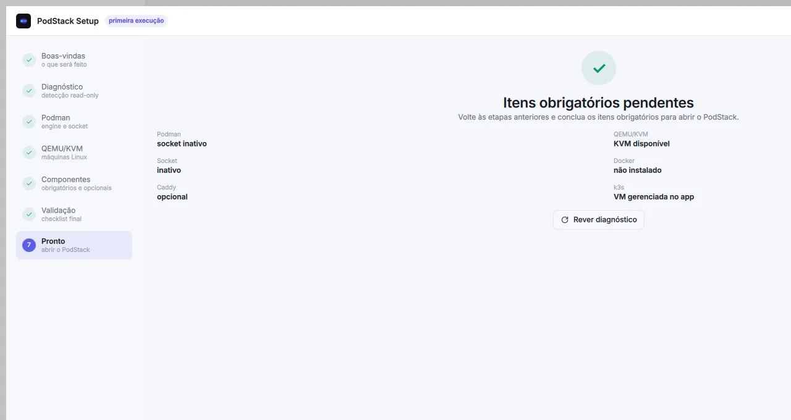

Onboarding
As sete telas do assistente de primeira execução: o que cada etapa detecta, o que ela altera e o que acontece se você pular.
Capturas reais, ambiente de teste
As imagens abaixo foram feitas em um ambiente isolado. Itens como o socket do Podman e o systemd de usuário podem aparecer pendentes; no seu host, o checklist reflete o estado real. Nenhuma ação privilegiada é executada sem confirmação.
1. Boas-vindas

O que a tela mostra. Um resumo do que será feito: Podman nativo, QEMU/KVM, domínios locais com Caddy e a coexistência com o Docker.
O que acontece. Nada. É uma explicação do fluxo, com o botão Começar para avançar.
Obrigatório? Não. Se pular: nada muda; o assistente apenas não foi iniciado.
2. Diagnóstico

O que a tela mostra. O estado de Docker, Podman, /dev/kvm, QEMU, OVMF, virtiofsd, systemd de usuário, SQLite, Caddy e k3s. Cada linha traz um status e uma ação sugerida quando algo está pendente.
O que acontece. Apenas detecção. O botão Escanear novamente repete os checks; nada é instalado ou alterado.
Obrigatório? Não, mas o resultado orienta as etapas seguintes. Se pular: você perde o diagnóstico inicial e segue sem saber o que falta.
3. Podman

O que a tela mostra. Se o Docker está presente, a versão do Podman, o estado do podman.socket e o botão Ativar podman.socket quando o socket está inativo.
O que acontece. O Podman pode ser instalado/atualizado pelo helper; ativar o socket rootless não exige helper. O Docker não é removido por padrão; a remoção é uma ação separada e opt-in.
Obrigatório? Sim: Podman com socket rootless. Se pular: o app fica bloqueado, porque não há engine para containers, machines ou Kubernetes.
4. QEMU/KVM

O que a tela mostra. Os checks de QEMU, OVMF, virtiofsd e /dev/kvm, com o botão Instalar virtualização quando falta algum componente.
O que acontece. O setup instala QEMU, OVMF, virtiofsd e libvirt opcional via helper. No Ubuntu 24.04 usa ovmf, qemu-system-x86, qemu-utils e virtiofsd; a 0.1.3 reconhece OVMF_CODE_4M.fd e OVMF_VARS_4M.fd. Se a instalação falhar, a mensagem do helper (por exemplo, pacote não encontrado) aparece no painel de log e no rodapé. Sem /dev/kvm, ele avisa e permite seguir com TCG, que é muito mais lento.
Obrigatório? Sim para concluir a validação e usar machines. Se pular: as machines ficam indisponíveis ou usam TCG.
5. Componentes

O que a tela mostra. Os itens obrigatórios (Podman socket + rootless e SQLite para o histórico de builds) e os opcionais (Caddy para HTTPS em *.localhost).
O que acontece. Os componentes marcados são instalados pelo helper. O k3s não é instalado no host: o cluster roda em uma VM dedicada e é habilitado depois na página Kubernetes.
Obrigatório? Socket/rootless e SQLite sim; Caddy é opcional. Se pular: a validação final acusa os obrigatórios pendentes.
6. Validação

O que a tela mostra. O checklist final com todos os checks, separando obrigatórios de avisos. O botão Validar instalação executa a validação e atualiza o resumo.
O que acontece. A validação é somente leitura. Avisos (por exemplo, Docker ausente ou Caddy opcional) não bloqueiam; os obrigatórios precisam estar ok.
Obrigatório? Sim para concluir. Se pular: o botão de conclusão continua bloqueado enquanto houver pendência obrigatória.
7. Pronto

O que a tela mostra. O resumo de Podman, socket, QEMU/KVM, Docker, Caddy e k3s, além do botão Abrir PodStack.
O que acontece. Se os obrigatórios estiverem ok, o botão abre o app e grava setup.completed. Se houver pendência, a tela mostra o que falta e permite voltar às etapas anteriores.
Obrigatório? Sim. Se pular: a tela principal continua com o aviso de configuração pendente enquanto setup.completed=false.
Depois do setup
Reexecutar ou pular
O assistente pode ser reexecutado em Configurações → Executar configuração. Pular o assistente grava app.showOnboarding=false, mantém setup.completed=false e deixa a tela principal com o aviso de configuração pendente.
Estados e chaves
| Chave | Tipo | O que significa |
|---|---|---|
setup.completed |
bool | O onboarding foi concluído com os obrigatórios ok. |
setup.completedAt |
data | Quando a conclusão foi gravada. |
setup.dockerPolicy |
string | Política de coexistência/remoção do Docker; a remoção é opt-in. |
app.showOnboarding |
bool | Exibe o onboarding quando setup.completed=false. |
Pela CLI
podstack setup --check # somente leitura
podstack setup --validate # validação final; exit 1 se houver pendência obrigatória
podstack setup # resumo do estado atualAs ações privilegiadas usam o podstack-helper e o polkit; a GUI nunca executa sudo ou shell. Para instalar componentes pela CLI, veja Instalação → Setup em 7 etapas.